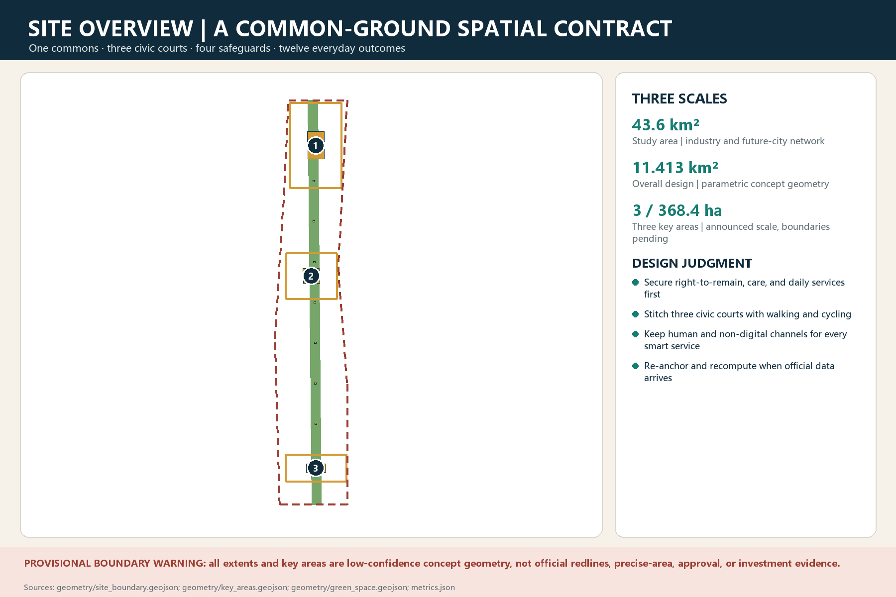
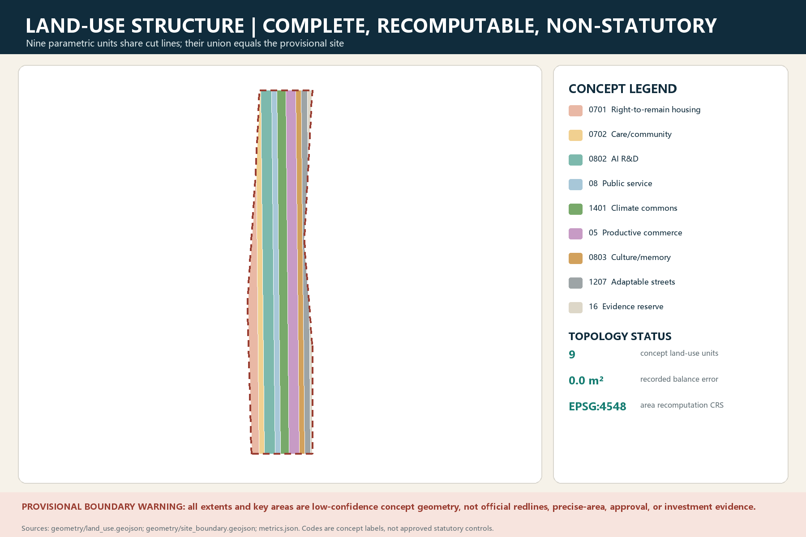
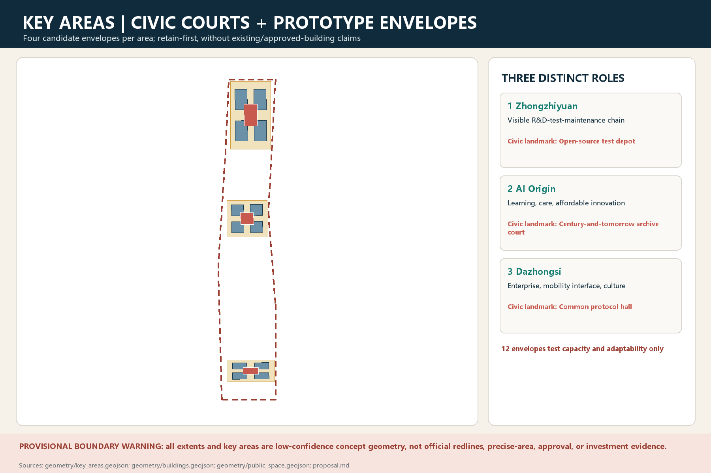
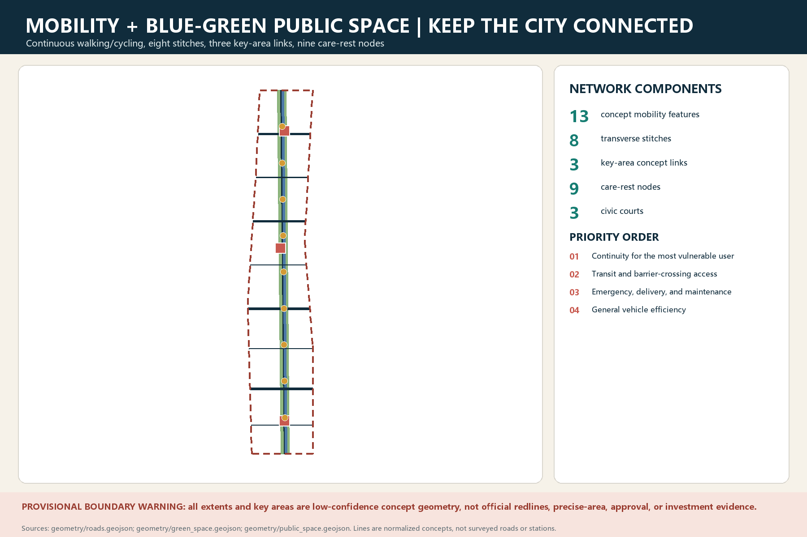
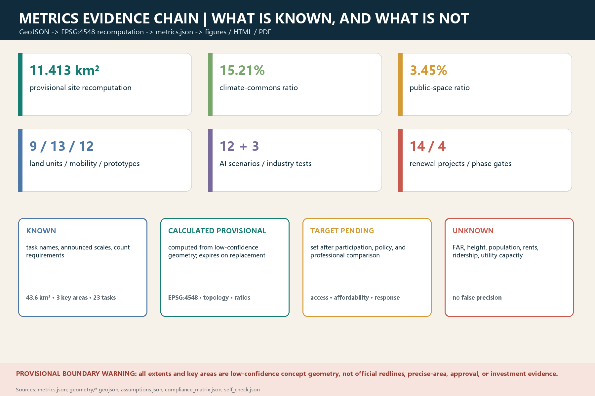

Study area: AI ecosystem, talent, events, and service coordination
All spatial geometry shown here is low-confidence and provisional, for design discussion and content review only; it is not evidence for official redlines, precise areas, approval, displacement, or investment.
Overview map

Three-scale framework
Overall design: renewal, mobility, blue-green and public-space structure
Key areas: three differentiated prototypes using provisional polygons only
Land-use structure

Key areas and buildings

Four candidate building prototypes per key area; no demolition or construction claim without an existing-building survey.
Retain, repair, add, and replace only through sequential evidence gates.
The test depot, archive court, and protocol hall are civic-institution landmark concepts.
Mobility and blue-green public space

Renewal projects and four implementation gates
Fourteen first-round projects
- P01 Data and coordinate audit
- P02 Four-party field inquiry
- P03 Reversible commons segment
- P04 Accessible crossings
- P05 North open-source test depot
- P06 Central care-learning living room
- P07 South public protocol hall
- P08 Affordable innovation space
- P09 Safe night-shift route
- P10 Jing-Zhang oral history
- P11 Edge-AI test corridor
- P12 Double-blind medical-AI validation
- P13 Curb logistics negotiation
- P14 Public decision receipt desk
Evidence gates, not a calendar promise
- 0 Evidence baseline
- 1 Reversible pilots
- 2 Public benefit first
- 3 Reviewed expansion
If safety, access, equity, appeal, or rollback gates fail, the project is reduced, repaired, or retired.
AI scenarios and human review
Twelve scenario cards, including three industry tests
- T01 Edge-AI open test
- T02 Double-blind medical-AI validation
- T03 Embodied-robot interface
- S04 Accessible crossing
- S05 Night-shift route
- S06 Affordable-space matching
- S07 Care relay
- S08 School walking
- S09 Heat-rain comfort
- S10 Memory interpretation
- S11 Curb logistics
- S12 Public decision receipt
Stop conditions for every card
Data minimization | human review | appeal | human takeover | non-AI alternative | rollback | retirement archive
AI must not decide access to public space, basic services, tenancy, employment, law enforcement, or medical diagnosis.
Core metrics

Task coverage
23 / 23
All 17 announcement tasks and six agent tasks have evidence mappings; mapping completeness is not professional approval.
- agent.1 Belt concept and functionsmapped
- agent.2 Full-stack innovation ecosystemmapped
- agent.3 AI+ urban scenariosmapped
- agent.4 Public space and civic landmarksmapped
- agent.5 Jing-Zhang / Zhongguancun / AI culturemapped
- agent.6 Global events and long-term operationsmapped
Self-check status
- BOUNDARY_TRUSTPASS总体设计边界已明确标记为暂定约束，仅用于方案内容审阅、结构测试和提交校验；取得官方红线后必须重锚并复算，不得用于测绘、审批或法定判断。 / The overall-design boundary is explicitly provisional and is used only for content review, structural testing, and package validation; an official redline must trigger re-anchoring and recalculation before survey, approval, or statutory use.
- KEY_AREAS_TRUSTPASS三个必选重点区域均已提交并标记为暂定空间锚点；其位置与形状不被表述为官方地块，正式 polygon、地籍和权属到位后必须替换。 / All three required key areas are present and labelled as provisional spatial anchors; their locations and shapes are not presented as official parcels and must be replaced when official polygons, cadastre, and tenure data arrive.
- ALIGNMENT_CONFLICT_DISCLOSEDPASSIssue #846 报告的零重叠与约 412.5 米最近距离，以及 Issue #1029 提出的重点区定位不确定性，已在来源、假设、正文和风险触发器中披露；二者只作为重锚警示，不作为官方纠错。 / The zero overlap and approximately 412.5 m nearest distance reported in Issue #846, and the key-area positioning uncertainty raised in Issue #1029, are disclosed across sources, assumptions, narrative, and risk triggers; both are treated as re-anchoring warnings, not official corrections.
- LAND_USE_TOPOLOGYPASS九个概念用地单元在 EPSG:4548 中构成总体暂定边界的完整参数化分区，空隙、越界与重叠合计误差为 0.0 平方米；该拓扑通过不赋予其法定用地性质。 / Nine conceptual land-use zones form a complete parametric partition of the provisional overall boundary in EPSG:4548, with a combined gap, outside, and overlap error of 0.0 sqm; topology validity does not confer statutory land-use status.
- METRIC_RECOMPUTATIONPASS37 项指标按 known、calculated provisional、target pending 与 unknown 分层；几何交换采用 EPSG:4326，面积与长度在 EPSG:4548 中复算，缺少正式数据的 FAR、高度、人口、交通分担、雨洪容量和可负担比例保持 unknown。 / Thirty-seven metrics are separated into known, calculated provisional, target pending, and unknown states; geometry is exchanged in EPSG:4326 and recomputed in EPSG:4548, while FAR, height, population, mode share, stormwater capacity, and affordability remain unknown where official evidence is absent.
- PROFESSIONAL_EVIDENCEPASS十三章正文的主张已就近链接数据、指标、来源、标准、假设与专业深度证据；23 项合规响应、9 项标准响应和 15 项设计深度响应均为项目特定内容，并已通过 professional_review.py。 / Claims in all thirteen chapters are locally linked to data, metrics, sources, standards, assumptions, and design-depth evidence; all 23 compliance, 9 standards, and 15 design-depth responses are project-specific and pass professional_review.py.
- BILINGUAL_PACKAGEPASS中文与英文的完整正文、离线报告、可视化入口、五组图件及 A3/A0 PDF 均成对存在，英文正文保持与中文相同的十三章结构和证据序列。 / Complete Chinese and English proposals, offline reports, visualization entries, five figure sets, and A3/A0 PDFs are paired; the English proposal preserves the same thirteen-section structure and evidence sequence as the Chinese proposal.
- VISUAL_STATICPASS中英文可视化页面均可离线打开，不加载 CDN、远程瓦片、外部脚本、外部字体、API 或 iframe；页面显示指标与 metrics.json 一致，并已通过 visual_review.py。 / Both visualization pages work offline without CDNs, remote tiles, external scripts, external fonts, APIs, or iframes; displayed metrics agree with metrics.json and pass visual_review.py.
- PDF_PAGE_QAPASS四份 PDF 已逐页渲染检查，共 30 页：中英文 A3 文册各 8 页、中英文 A0 展板各 7 页；页面为准确的横向 A3/A0 尺寸，未发现裁切、乱码、黑块或远程依赖。 / All four PDFs were rendered and checked page by page, 30 pages total: eight pages in each Chinese/English A3 booklet and seven in each Chinese/English A0 board set; pages use exact landscape A3/A0 sizes with no clipping, garbled text, black blocks, or remote dependencies.
- AI_GOVERNANCEPASS十二张 AI 场景卡（含三项产业测试）均说明空间锚点、数据边界、非 AI 替代、人工复核、申诉、回滚和停止条件；公共空间准入、基本服务和高风险专业判断不交由模型单独决定。 / All twelve AI scenario cards, including three industry tests, specify spatial anchors, data boundaries, non-AI alternatives, human review, appeal, rollback, and stop conditions; models do not independently decide public-space access, essential services, or high-risk professional judgments.
- COPYRIGHT_AND_MODEL_DISCLOSUREPASS版权声明记录了原创文本、参数化几何、脚本和图形的生成边界；提交包未复制第三方图片、标志或远程底图，来源使用限制、字体和 AI 模型信息分别在声明、sources.json 与 agent.json 中披露。 / The copyright statement records the provenance of original text, parametric geometry, scripts, and graphics; no third-party imagery, logos, or remote basemaps are copied, and source-use limits, fonts, and AI model information are disclosed in the statement, sources.json, and agent.json.
- PROVISIONAL_PRECISION_LIMITPASS官方边界、重点区、地籍权属、现状建筑、控规、道路与轨道、市政、文保、人口住房及生态实测等缺口已登记为 17 条假设和重算触发器；现有方案不作法定、审批、征收、投资或施工精度承诺。 / Gaps in official boundaries, key areas, cadastre and tenure, existing buildings, controls, roads and rail, utilities, heritage, population and housing, and ecological surveys are registered as 17 assumptions and recalculation triggers; the current proposal makes no statutory, approval, expropriation, investment, or construction-precision claim.
Controllable checks pass; data gaps remain visible
A provisional-boundary pass is not professional confirmation. Recompute after official geometry, statutory controls, rights, heritage, buildings, transport, utilities, ecology, and population baselines arrive.
Sources
Formal task basis
OFFICIAL-ANNOUNCEMENT · AGENT-TASKBOOK · SITE-PACKAGE · FORMAL-SUBMISSION-GUIDE
Recomputable spatial layer
geometry/*.geojson · metrics.json · EPSG:4548
Issues and triggers
Issue #846 · Issue #1029 · official geometry replacement
Assumptions
A-BOUNDARY-001provisional_constraint_pending_official_replacementA-KEY-AREAS-001provisional_constraint_pending_official_replacementA-OSM-MISMATCH-001unresolved_background_conflictA-CONTROLS-001pending_professional_and_authority_confirmationA-HERITAGE-CONTROLS-001pending_heritage_specialist_confirmationA-PARCEL-OWNERSHIP-001missing_baselineA-BUILDINGS-001missing_baselineA-TRANSPORT-001missing_baselineA-MUNICIPAL-SAFETY-001missing_baselineA-POPULATION-HOUSING-001missing_distributional_baselineA-PUBLIC-SERVICES-001missing_baselineA-CLIMATE-ECOLOGY-001missing_baseline
Claim boundary
Do not fill missing data with attractive numbers, draw concept lines as existing roads, label prototype envelopes as approved buildings, or substitute AI suggestions for professional responsibility.